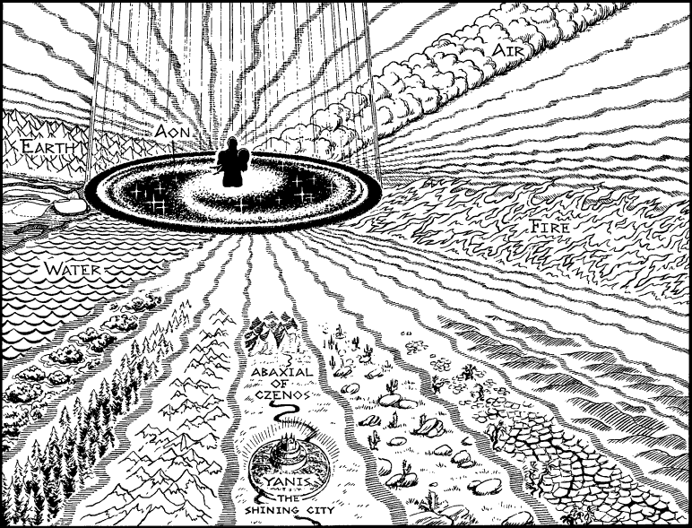

268
The swirling light draws into focus upon the mirrored floor and you find yourself surrounded by a spectacular cosmic image. At the centre spins a shadow, as dark as deep space, populated with suns and stars and the myriad planets that revolve about them. This microscopic universe is in turn surrounded by a ring of total darkness, and beyond that radiate four beams of differing colour, like the spokes of a gigantic wheel. Between these beams are many areas of light and shade, some running parallel and some in isolation, but all of them connected by a pale, shimmering mist. ‘What you see before you is a tableau of our worlds, a light-painting that depicts the universe of Aon and the Daziarn Plane,’ says the Beholder, as his servant carries him to the dark centre of the floor. ‘Here, among the suns and stars of Aon, is the planet you know as Magnamund, and beyond it lies the Shadow Gate through which you fell into the Daziarn.’ Slowly the Yoacor moves towards you, bearing his master with care as he continues his monologue proudly. ‘And here, balanced between the elemental strongholds of Fire and Water, lies the Abaxial of Czenos. This is my realm. I have chosen to live here, to shape it as I wish and to populate it with beings who embody my ideals.’

Coldly the Beholder stares into your eyes and you feel your body stiffen as he probes deep into your mind.
If you possess the Magnakai Discipline of Psi-screen, turn to 174.
If you do not possess this skill, turn to 102.